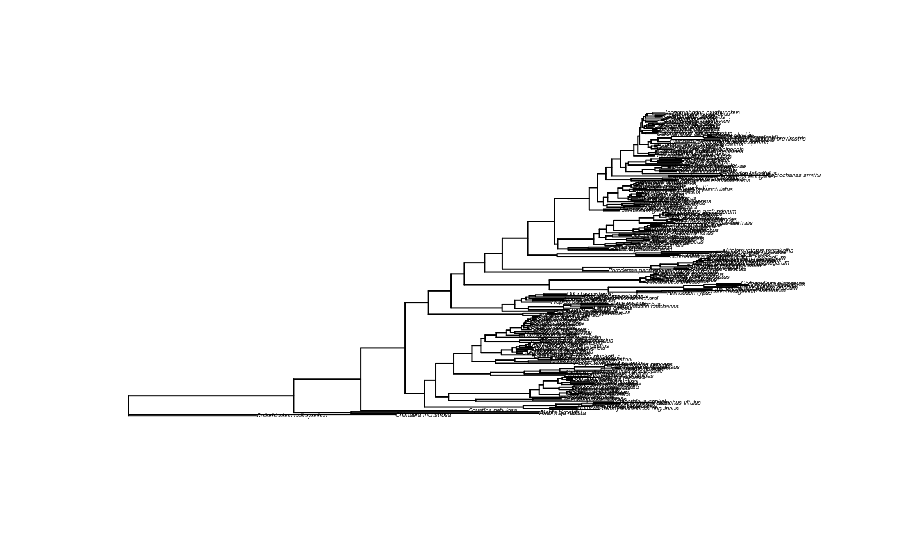

Calibrating molecular phylogeny of the sharks
Hannes Hettling, Rutger Vos
Aug 29, 2018
Source:vignettes/sharks.Rmd
sharks.RmdBackground
The time-calibration of molecular phylogenies, i.e. assigning absolute ages to nodes in the phylogeny is an essential tool in phylogenetic comparative analyses. Time-calibration can be accomplished with e.g. data from fossil specimen with an assigned age that are in a known taxonomic group. Specimen ages can be determined by e.g. carbon dating or stratigraphic methods. Node can then be assigned using Baeysian or Maximum-Likelihood methods. At Naturalis, quite a few of our specimen records hold chronographic information.
Here we will demonstrate how to extract this data using nbaR and how to create input for the popular tree-calibration function chronos from the phylogenetic analysis package ape.
The phylogeny
As input, we will use a species-level molecular shark phylogeny published by (Vélez-Zuazo and Agnarsson (2012) Vélez-Zuazo and Agnarsson 2011).
The phylogeny is a majority-rule consensus tree inferred from molecular markers using Bayesian inference and comprises 229 species in all eight orders of the sharks (superorder Selachimorpha):

The non-ultrametric tree in the above figure is not time-calibrated, the branch lengths thus represent molecular distances.
Getting chronological data with nbaR
Chronological association is associated with Specimen data, we thus instanciate a SpecimenClient:
In total, there are eight extant shark orders.
shark_orders <- c("Carcharhiniformes",
"Heterodontiformes",
"Hexanchiformes",
"Lamniformes",
"Orectolobiformes",
"Pristiophoriformes",
"Squaliformes",
"Squatiniformes")We can then formulate a query condition for specimens that are identified in one of these orders using the operator IN:
For many specimen, chronological information is available in the fiels gatheringEvent.chronoStratigraphy.youngChronoName and gatheringEvent.chronoStratigraphy.oldChronoName which represent the upper- and lower time bounds, respectively. Below, we will formulate a QueryCondition that requires either one of these fields to be non-empty:
## formulate query conditions for fields to be non-empty
qc2 <- QueryCondition$new(field="gatheringEvent.chronoStratigraphy.youngChronoName", operator="NOT_EQUALS", value="")
qc3 <- QueryCondition$new(field="gatheringEvent.chronoStratigraphy.oldChronoName", operator="NOT_EQUALS", value="")
## join qc2 and qc3 with operator OR
qc2$or <- list(qc3)Now we can do the query:
## instantiate QuerySpec, give size
qs <- QuerySpec$new(conditions=list(qc, qc3), size=5000)
res <- sc$query(querySpec = qs)
## how many hits?
res$content$totalSize## [1] 4009Exploring the data
Now we can explore the data a bit:
## load all specimens
specimens <- lapply(res$content$resultSet, function(x)x$item)
## whats in youngCronoName and oldChronoName?
unique(unlist(lapply(specimens, function(x)x$gatheringEvent$chronoStratigraphy[[1]]$youngChronoName)))## [1] "Miocene" "Pliocene" "Upper Miocene" "Pleistocene"
## [5] "Oligocene" "Cretaceous" "Chattian" "Middle Miocene"
## [9] "Paleocene" "Lower Miocene" "Maastrichtian" "Pliocene?"unique(unlist(lapply(specimens, function(x)x$gatheringEvent$chronoStratigraphy[[1]]$oldChronoName)))## [1] "Neogene"
## [2] "Middle Miocene"
## [3] "Middle Eocene"
## [4] "Mioceen"
## [5] "Oligocene"
## [6] "Miocene"
## [7] "Lower Miocene"
## [8] "Rupelian"
## [9] "Unspecified age"
## [10] "Ypresian"
## [11] "Recent"
## [12] "Upper Miocene"
## [13] "Eocene"
## [14] "Pleistocene"
## [15] "Unindentified Age"
## [16] "Pliocene"
## [17] "B.Mioceen"
## [18] "Cretaceous"
## [19] "Priabonian"
## [20] "Middle Pliocene"
## [21] "Onderste Rupelien"
## [22] "Kwartaire afzetting op zanden van Grimmertingen"
## [23] "Early Miocene"
## [24] "Upper Eocene"
## [25] "Oligoceen, Rupelien"
## [26] "Paleocene"
## [27] "Tertiair"
## [28] "M.mioceen"
## [29] "Onder-Plioceen"
## [30] "Mioceen?"
## [31] "Lower Miocene?"
## [32] "Maastrichtian"
## [33] "Recent?"
## [34] "A. karsteni - Niso sp. Ass. Zone"
## [35] "Oligoceen"
## [36] "Plio-Pleistocene?"
## [37] "Lower Rupelian"
## [38] "Plio-Pleistoceen"
## [39] "Unindentified A"
## [40] "Cenomanian"
## [41] "Unspecified Age"
## [42] "? Kwartaire afzetting op zanden van Grimmertingen"
## [43] "M.Miocen"
## [44] "Pliocene?"
## [45] "Middle Miocen"Caution: As you see above, there can be more than one chronoStratigraphy assigned with a specimen. Check how many we have per specimen:
## [1] 1Ok, each gatheringEvent in each Specimen has only one chronoStratigraphy. We thus do not miss data by taking the first one (chronoStratigraphy[[1]]).
Let’s further expleore the data. To see what part of the animals were preserved, we can look into the field kindOfUnit:
##
## AnimalPart tooth vertebra
## 2 4006 1Almost all of them are teeth.
Getting absolute ages
The type of chronostratigraphic data (as shown above) is given in divisions on the geological time scale, e.g. Miocene. These strings can refer to eons, eras, periods, epochs and ages. In order to translate this into absolute ages, we will use the API of the Earth Life Consortium. This is possible using the conventience function get_age. For example
## get the upper chrono name for the first specimen
name <- specimens[[1]]$gatheringEvent$chronoStratigraphy[[1]]$oldChronoNam
name## NULL## data frame with 0 columns and 2 rowsWe can now make a table with all interesting data, below this is done for the first 50 specimen objetcs:
## Get genus, species and chrono information from specimen records
data <- as.data.frame(do.call(rbind, lapply(specimens[1:50], function(x) {
genus <- x$identifications[[1]]$defaultClassification$genus
if (is.null(genus)) genus <- NA
specificEpithet <- x$identifications[[1]]$defaultClassification$specificEpithet
if (is.null(specificEpithet)) specificEpithet <- NA
youngChronoName <- x$gatheringEvent$chronoStratigraphy[[1]]$youngChronoName
if (is.null(youngChronoName)) youngChronoName <- NA
oldChronoName <- x$gatheringEvent$chronoStratigraphy[[1]]$oldChronoName
if (is.null(oldChronoName)) oldChronoName <- NA
c(genus=genus, specificEpithet=specificEpithet,
youngChronoName=youngChronoName, oldChronoName=oldChronoName)
})))
## Get absolute ages from earth life consortium
times <- geo_age(unique(c(as.character(data$youngChronoName), as.character(data$oldChronoName))))## Warning in FUN(X[[i]], ...): Could not retreive values for geo unit
## "Mioceen" from earthlifeconsortium.org## Warning in FUN(X[[i]], ...): Could not retreive values for geo unit
## "Unspecified age" from earthlifeconsortium.org## add upper and lower bounds to ages
data$young_age <- sapply(data$youngChronoName, function(x)ifelse(is.na(x), NA, unlist(times['late_age', as.character(x)])))
data$old_age <- sapply(data$oldChronoName, function(x)ifelse(is.na(x), NA, unlist(times['early_age', as.character(x)])))
data## genus specificEpithet youngChronoName oldChronoName
## 1 Ginglymostoma sp. <NA> Neogene
## 2 Megascyliorhinus sp. indet. <NA> Middle Miocene
## 3 Heterodontus <NA> <NA> <NA>
## 4 Heterodontus <NA> <NA> <NA>
## 5 Eostegostoma angusta <NA> Middle Eocene
## 6 Palaeorhincodon wardi <NA> Middle Eocene
## 7 Palaeorhincodon wardi <NA> Middle Eocene
## 8 Pristiophorus sp. <NA> Mioceen
## 9 Pristiophorus rupeliensis <NA> Oligocene
## 10 Pristiophorus rupeliensis <NA> Oligocene
## 11 Pristiophorus schroederi Miocene Miocene
## 12 Chiloscyllium minutum <NA> <NA>
## 13 Notidanus primigenius <NA> Lower Miocene
## 14 Notorhynchus primigenius <NA> Mioceen
## 15 Hexanchus primigenius Miocene Miocene
## 16 Pristiophorus schroederi Pliocene Miocene
## 17 Heterodontus <NA> <NA> <NA>
## 18 Heterodontus vincenti <NA> Middle Eocene
## 19 Heterodontus vincenti <NA> Middle Eocene
## 20 Heterodontus <NA> <NA> <NA>
## 21 Heterodontus <NA> <NA> <NA>
## 22 Pristiophorus schroederi Pliocene <NA>
## 23 Pristiophorus sp. <NA> Mioceen
## 24 Pristiophorus schroederi Pliocene Miocene
## 25 Pristiophorus schroederi Pliocene Miocene
## 26 Pristiophorus schroederi Pliocene Miocene
## 27 Pristiophorus rupeliensis <NA> Oligocene
## 28 Pristiophorus? schroederi Pliocene Miocene
## 29 Pristiophorus? <NA> Miocene Miocene
## 30 Pristiophorus rupeliensis <NA> Rupelian
## 31 Pristiophorus rupeliensis <NA> Oligocene
## 32 Pristiophorus rupeliensis <NA> Oligocene
## 33 Pristiophorus sp. <NA> Mioceen
## 34 Pristiophorus rupeliensis <NA> Oligocene
## 35 Pristiophorus rupeliensis <NA> Oligocene
## 36 Pristiophorus schroederi Pliocene Miocene
## 37 Heterodontus <NA> <NA> <NA>
## 38 Heterodontus <NA> <NA> <NA>
## 39 Heterodontus <NA> <NA> <NA>
## 40 Pristiophorus sp. <NA> Miocene
## 41 Pristiophorus rupeliensis <NA> Oligocene
## 42 Pristiophorus sp. <NA> Mioceen
## 43 Heterodontus <NA> <NA> <NA>
## 44 Heterodontus <NA> <NA> <NA>
## 45 Heterodontus <NA> <NA> <NA>
## 46 Squatina sp. indet. <NA> Middle Miocene
## 47 Squatina <NA> <NA> Miocene
## 48 Squatina prima <NA> Unspecified age
## 49 Squatina biforis <NA> Middle Miocene
## 50 Squatina sp. Pliocene <NA>
## young_age old_age
## 1 NA 23.03
## 2 NA 15.97
## 3 NA NA
## 4 NA NA
## 5 NA 48.60
## 6 NA 48.60
## 7 NA 48.60
## 8 NA NA
## 9 NA 33.90
## 10 NA 33.90
## 11 5.33 23.03
## 12 NA NA
## 13 NA 23.03
## 14 NA NA
## 15 5.33 23.03
## 16 2.59 23.03
## 17 NA NA
## 18 NA 48.60
## 19 NA 48.60
## 20 NA NA
## 21 NA NA
## 22 2.59 NA
## 23 NA NA
## 24 2.59 23.03
## 25 2.59 23.03
## 26 2.59 23.03
## 27 NA 33.90
## 28 2.59 23.03
## 29 5.33 23.03
## 30 NA 33.90
## 31 NA 33.90
## 32 NA 33.90
## 33 NA NA
## 34 NA 33.90
## 35 NA 33.90
## 36 2.59 23.03
## 37 NA NA
## 38 NA NA
## 39 NA NA
## 40 NA 23.03
## 41 NA 33.90
## 42 NA NA
## 43 NA NA
## 44 NA NA
## 45 NA NA
## 46 NA 15.97
## 47 NA 23.03
## 48 NA NA
## 49 NA 15.97
## 50 2.59 NACalibrating the phylogeny
Depending on the data, calibration points could be chosen on different taxonomic levels; If there are sufficient specimen determined at species level, one could use the upper- and lower bounds above. It is also possible to average upper- and lower values for a higher taxonomic group, such as genus or family. Since this requires some data cleaning, such as dealing with duplicates, missing data, etc, nbaR offers the function chronos_calib which takes a set of specimen object, and a tree and averages the data for a user-defined taxonomic group and returns a calibration table that can be directly used as input for the function chronos from the package ape. The function also determines the node which will be calibrated in the phylogenetic tree.
The shark phylogeny comes with the package and can be parsed using the package ape:
library(ape)
## read data
path <- system.file('extdata', 'shark_tree.nex', package='nbaR')
tree <- read.nexus(path)
## plot the tree
plot(tree, cex=0.3)
Now we use chronos_calib to get the table at the genus level. chronos_calib also selects the nodes in the tree that will be calibrated. This is done by selecting the most recent common ancestor (mrca) of the species for which the data are averaged.
## make calibration table on genus level
calibration_table <- chronos_calib(specimens, tree, "genus")## Warning in FUN(X[[i]], ...): Could not retreive values for geo unit
## "Pliocene?" from earthlifeconsortium.org## Warning in FUN(X[[i]], ...): Could not retreive values for geo unit
## "Mioceen" from earthlifeconsortium.org## Warning in FUN(X[[i]], ...): Could not retreive values for geo unit
## "Unspecified age" from earthlifeconsortium.org## Warning in FUN(X[[i]], ...): Could not retreive values for geo unit
## "Recent" from earthlifeconsortium.org## Warning in FUN(X[[i]], ...): Could not retreive values for geo unit
## "Unindentified Age" from earthlifeconsortium.org## Warning in FUN(X[[i]], ...): Could not retreive values for geo unit
## "B.Mioceen" from earthlifeconsortium.org## Warning in FUN(X[[i]], ...): Could not retreive values for geo unit "Middle
## Pliocene" from earthlifeconsortium.org## Warning in FUN(X[[i]], ...): Could not retreive values for geo unit
## "Onderste Rupelien" from earthlifeconsortium.org## Warning in value[[3L]](cond): Timeout reached while retreiving values
## for geo unit "Kwartaire afzetting op zanden van Grimmertingen" from
## earthlifeconsortium.org## Warning in FUN(X[[i]], ...): Could not retreive values for geo
## unit "Kwartaire afzetting op zanden van Grimmertingen" from
## earthlifeconsortium.org## Warning in FUN(X[[i]], ...): Could not retreive values for geo unit
## "Oligoceen, Rupelien" from earthlifeconsortium.org## Warning in FUN(X[[i]], ...): Could not retreive values for geo unit
## "Tertiair" from earthlifeconsortium.org## Warning in FUN(X[[i]], ...): Could not retreive values for geo unit
## "M.mioceen" from earthlifeconsortium.org## Warning in FUN(X[[i]], ...): Could not retreive values for geo unit "Onder-
## Plioceen" from earthlifeconsortium.org## Warning in FUN(X[[i]], ...): Could not retreive values for geo unit
## "Mioceen?" from earthlifeconsortium.org## Warning in FUN(X[[i]], ...): Could not retreive values for geo unit "Lower
## Miocene?" from earthlifeconsortium.org## Warning in FUN(X[[i]], ...): Could not retreive values for geo unit
## "Recent?" from earthlifeconsortium.org## Warning in value[[3L]](cond): Timeout reached while retreiving values for
## geo unit "A. karsteni - Niso sp. Ass. Zone" from earthlifeconsortium.org## Warning in FUN(X[[i]], ...): Could not retreive values for geo unit "A.
## karsteni - Niso sp. Ass. Zone" from earthlifeconsortium.org## Warning in FUN(X[[i]], ...): Could not retreive values for geo unit
## "Oligoceen" from earthlifeconsortium.org## Warning in FUN(X[[i]], ...): Could not retreive values for geo unit "Plio-
## Pleistocene?" from earthlifeconsortium.org## Warning in FUN(X[[i]], ...): Could not retreive values for geo unit "Lower
## Rupelian" from earthlifeconsortium.org## Warning in FUN(X[[i]], ...): Could not retreive values for geo unit "Plio-
## Pleistoceen" from earthlifeconsortium.org## Warning in FUN(X[[i]], ...): Could not retreive values for geo unit
## "Unindentified A" from earthlifeconsortium.org## Warning in FUN(X[[i]], ...): Could not retreive values for geo unit
## "Unspecified Age" from earthlifeconsortium.org## Warning in value[[3L]](cond): Timeout reached while retreiving values
## for geo unit "? Kwartaire afzetting op zanden van Grimmertingen" from
## earthlifeconsortium.org## Warning in FUN(X[[i]], ...): Could not retreive values for geo
## unit "? Kwartaire afzetting op zanden van Grimmertingen" from
## earthlifeconsortium.org## Warning in FUN(X[[i]], ...): Could not retreive values for geo unit
## "M.Miocen" from earthlifeconsortium.org## Warning in FUN(X[[i]], ...): Could not retreive values for geo unit "Middle
## Miocen" from earthlifeconsortium.org## node age.min age.max soft.bounds taxon
## 1 432 2.635714 21.35846 FALSE Carcharhinus
## 2 364 0.870000 25.12714 FALSE Galeus
## 3 311 66.000000 83.20000 FALSE Heterodontus
## 4 243 5.444545 21.84214 FALSE Hexanchus
## 5 320 4.745833 16.46489 FALSE Isurus
## 6 318 28.984615 49.32840 FALSE Lamna
## 7 245 3.503333 26.13571 FALSE Pristiophorus
## 8 346 3.960000 30.67263 FALSE Scyliorhinus
## 9 428 0.010000 20.20600 FALSE Sphyrna
## 10 297 5.708182 30.13364 FALSE Squalus
## 11 237 16.384000 30.11038 FALSE SquatinaNote: This function can produce many warnings, a worning is emitted whenever, for some geological division, no data can be obtained from the earth life consortium. This can be due to misspellings or words in foreign languages.
## NULLNote: It is essential to thoroughly evaluate the calibration table! In this example, for example, the genus Squatina is non-monophyletic and one species is placed somewhere else in the tree. Calibrating the most recent common ancestor node for this genus can therefore result in errenous results or in errors using the calibration routine. We will therefore remove the calibration points for genus Squatina before calibration:
## clean up: one reogue taxon in genus "Squatina"! Skip this genus
calibration_table <- calibration_table[calibration_table$taxon != "Squatina",]
## run ape's chronos
chronogram <- chronos(tree, calibration=calibration_table)
## plot tree with time axis
plot(chronogram, cex=0.3)
axisPhylo()
## label the mrcas that were used as calibration points
nodelabels(calibration_table$taxon, calibration_table$node, frame='none', pch='x', cex.tex=0.6)References
Vélez-Zuazo, Ximena, and Ingi Agnarsson. 2011. “Shark Tales: A Molecular Species-Level Phylogeny of Sharks (Selachimorpha, Chondrichthyes).” Molecular Phylogenetics and Evolution 58 (2): 207–17. https://doi.org/https://doi.org/10.1016/j.ympev.2010.11.018.